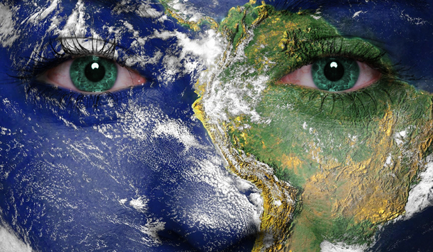
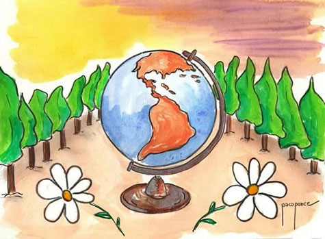
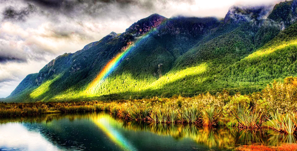
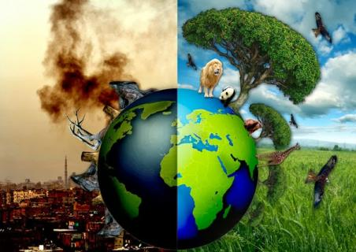
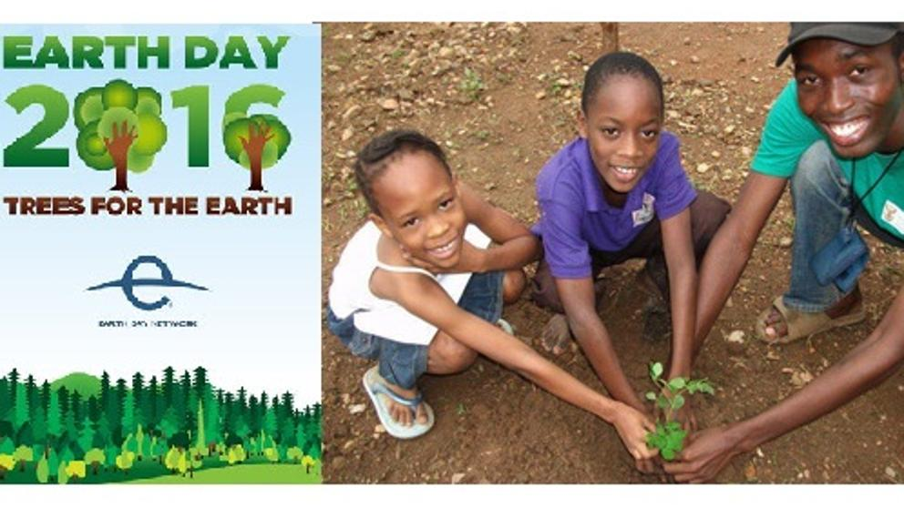
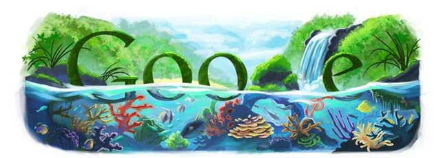
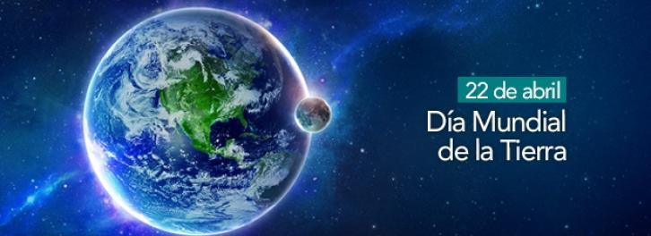

Día Internacional de la Madre Tierra 22 de abril


- 
- 
- 

- 

Realizado por:
Leonardo Quintero Barron
4 "E"
Especialidad
Desarrolla Aplicaciones Móviles
Docente:
Lic. José Antonio Gómez Hernández
Día de la madre Tierra
Leonardo Quintero Barron

4 "E"
Desarrolla Aplicaciones Móviles
Lic. José Antonio Gómez Hernández
Celebramos el Día Internacional de la Madre Tierra para recordar que el planeta y sus ecosistemas nos dan la vida y el sustento. Con este día, asuminos, además, la responsabilidad colectiva, como nos recordaba la Declaración de Rio de 1992, de fomentar esta armonía con la naturaleza y la madre Tierra. Este día nos brinda también la oportunidad de concienciar a todos los habitantes del planeta acerca de los problemas que afectan a la Tierra y a las diferentes formas de vida que en él se desarrollan.
En 1968, Morton Hilbert y el U.S. Public Health Service (Servicio de Salud Pública de E.E.U.U.), organizaron el Simposio de Ecología Humana, se realiza una conferencia por los nombrados anteriormente para una asamblea o conferencia medioambiental para que estudiantes escucharan a científicos hablar sobre los efectos del deterioro ambiental en la salud humana. Este fue el primer antecedente del Día de la Tierra. Durante los siguientes dos años, Hilbert y sus estudiantes trabajaron para planear el primer Día de la Tierra. Surgieron otros esfuerzos como Survival Project (Proyecto para la Supervivencia), uno de los primeros eventos educacionales de conciencia ambiental, que fue llevado a cabo en la Universidad Northwestern el 23 de enero de 1970. Este fue el primero de varios eventos realizados en campus universitarios por todo Estados Unidos. Así mismo, Ralph Nader empezó a hablar acerca de la importancia de la ecología en 1970.
La primera manifestación tuvo lugar el 22 de abril de 1970, promovida por el senador y activista ambiental Gaylord Nelson, para la creación de una agencia ambiental. En esta convocatoria participaron dos mil universidades, diez mil escuelas (primarias y secundarias) y centenares de comunidades. La presión social tuvo sus logros y el gobierno de los Estados Unidos creó la Environmental Protection Agency (Agencia de Protección Ambiental) y una serie de leyes destinadas a la protección del medio ambiente.
En 1972 se celebró la primera conferencia internacional sobre el medio ambiente. La Cumbre de la Tierra de Estocolmo cuyo objetivo fue sensibilizar a los líderes mundiales sobre la magnitud de los problemas ambientales.
Actualmente esta celebración, esta siendo opacada en Los Estados Unidos de América, por Donald John Trump; así como lo ha hecho con diversos programas relacionados, en el corto tiempo que lleva en la presidencia de dicho país.
«Madre Tierra» es una expresión común utilizada para referirse al Planeta Tierra en diversos países y regiones, lo que demuestra la interdependencia existente entre los seres humanos, las demás especies vivas y el planeta que todos habitamos.
La Tierra y sus ecosistemas son nuestro hogar. Para alcanzar un justo equilibrio entre las necesidades económicas, sociales y ambientales de las generaciones presentes y futuras, es necesario promover la armonía con la naturaleza y el planeta.
Celebramos el Día Internacional de la Madre Tierra para recordar que el planeta y sus ecosistemas nos dan la vida y el sustento. Con este día, asumimos, además, la responsabilidad colectiva, como nos recordaba la Declaración de Río de 1992, de fomentar esta armonía con la naturaleza y la Madre Tierra.
Este día nos brinda también la oportunidad de concienciar a todos los habitantes del planeta acerca de los problemas que afectan a la Tierra y a las diferentes formas de vida que en él se desarrollan.
La ONU informó que este año se celebrará el octavo Diálogo sobre armonía con la naturaleza, el día 23 de abril en la Sede de la ONU de Nueva York. Este diálogo interactivo es una buena plataforma para tratar temas como la producción sostenible y los patrones de consumo en la Armonía con la naturaleza. Asimismo, el diálogo quiere fomentar que los ciudadanos y las sociedades se conciencien sobre cómo se relacionan y cómo pueden relacionarse con el mundo natural; al mismo tiempo, pretende mejorar los cimientos éticos de la relación entre la humanidad y la Tierra, en términos de desarrollo sostenible.

En diciembre de 2009 la Asamblea General aprobó la resolución 64/236, en virtud de la cual decidió organizar la Conferencia de las Naciones Unidas sobre el Desarrollo Sostenible. Esta Conferencia se realizará en Río de Janeiro (Brasil) en junio de 2012, 20 años después de la Conferencia de las Naciones Unidas sobre el Medio Ambiente y el Desarrollo, conocida como Cumbre para la Tierra, y constituye una oportunidad histórica para hacer un balance de lo sucedido en estas dos décadas, evaluar los advances logrados y las dificultades encontradas y explorar nuevas formas de cooperación que permitan acelerar la transición hacia un desarrollo sostenible.

